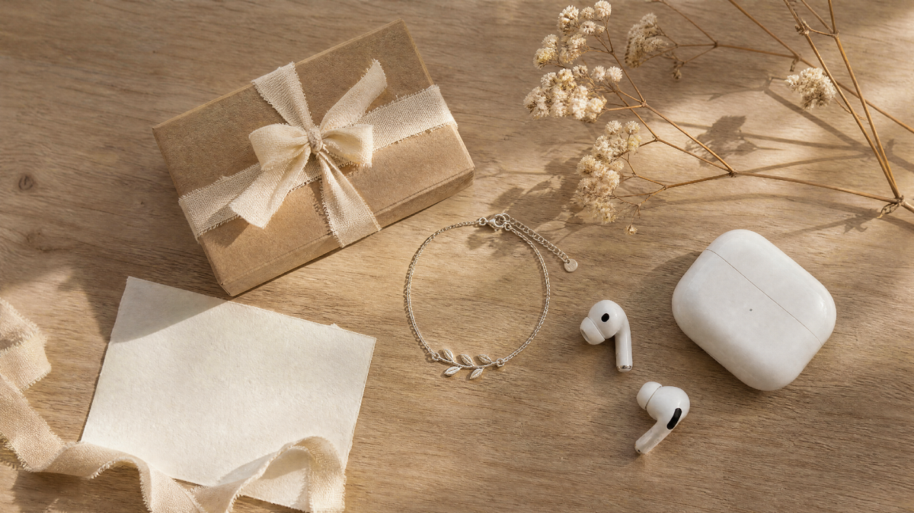

Первые отношения — это всегда сложно. А первые подарки в этих отношениях — сложно вдвойне. Денег нет, опыта нет, а страха — хоть отбавляй. Кажется, что любая вещь будет либо «слишком детской», либо «слишком взрослой», либо «слишком дорогой», либо «слишком дешёвой».
Разберёмся, как подростку выбрать подарок парню или девушке так, чтобы попасть в точку, не разориться и не выглядеть глупо.
Почему это так сложно
Подростковый подарок — это не просто вещь. Это заявление. «Я хочу, чтобы ты знал: ты мне небезразличен». И одновременно — «Я не хочу выглядеть навязчиво».
В этом возрасте всё воспринимается острее. Подарок могут обсмеять друзья. Могут не так понять. Могут сравнить с тем, что подарил кто-то другой. Поэтому подростки часто либо вообще не дарят, либо дарят что-то «безопасное» — и промахиваются.
Что важно понять: в подростковых отношениях цена не имеет значения. Имеет значение внимание. Подарок за 300 рублей, который показывает «я слушал, о чём ты говоришь», работает лучше, чем дорогая вещь, купленная наугад.
Что подарить девушке
Девушки в этом возрасте ценят две вещи: внимание и эстетику. Подарок должен быть не просто полезным, а красивым. И обязательно — с намёком на то, что вы её видите.
Что работает:
- Что-то для её хобби. Если она рисует — скетчбук. Если читает — книга в её теме. Если увлекается музыкой — аксессуар для наушников.
- Украшение. Тонкий браслет, простая цепочка, серёжки. Не дорогое, но красивое. Главное — не «бабушкино», а современное.
- Парфюм или косметика. Если знаете её вкус. Не экспериментируйте с неизвестными брендами.
- Впечатление. Поход в кино, на каток, в кафе. Для многих девушек это ценнее вещи.
- Что-то своими руками. Открытка, плейлист, фотоколлаж. Работает, если сделано с душой, а не «на отвяжись».
Что не работает:
- Огромный плюшевый медведь. Это уже не смешно.
- Дешёвая бижутерия, которая сломается через день.
- Что-то «для дома» — сковородка или полотенце. Она не жена.
Что подарить парню
Парни в этом возрасте ценят функциональность и статус. Подарок должен быть полезным или «крутым». И обязательно — не «детским».
Что работает:
- Что-то для его увлечения. Если он играет — аксессуар для гейминга. Если занимается спортом — что-то для тренировок. Если слушает музыку — наушники.
- Аксессуар. Хороший ремень, брелок, стильный рюкзак. То, что можно носить и показывать.
- Впечатление. Билеты на матч, поход в кино, совместная прогулка. Работает, если он ценит время.
- Что-то с гравировкой. Брелок с датой, кружка с именем. Показывает, что вы думали о нём.
Что не работает:
- Носки и пена для бритья. Это «закупка», а не подарок.
- Что-то «исправляющее» — тренажёр, книга «как стать лучше». Это обидно.
- Слишком дорогое. Парень может почувствовать давление.

Как вручить, чтобы не было неловко
Подростки часто стесняются. Отдают подарок и убегают. А потом жалеют.
Скажите одну фразу. Объясните, почему вы это выбрали. «Я видел это и подумал о тебе». «Я выбрал это, потому что ты говорил, что любишь такое». Одна фраза — и подарок становится посланием.
Не извиняйтесь за цену. «Знаю, что недорого, но…» — убивает весь смысл. Дешёвый, но осмысленный подарок работает лучше дорогого и безразличного.
Не ждите бурной реакции. Подростки часто сдерживают эмоции. Если он или она улыбнулись — этого достаточно.
Дайте время. Не торопитесь убегать. Побудьте рядом. Пусть человек посмотрит, поблагодарит.
Что не стоит делать
Не дарите то, что не имеет отношения к человеку. Если девушка не любит украшения — не дарите украшения. Если парень не играет в игры — не дарите игровую мышь.
Не дарите слишком дорогое за родительские деньги. Если вы купили подарок на деньги родителей — это видно. И это неприятно.
Не дарите то, что хотите сами. Планшет «чтобы мы вместе играли», но играете вы. Это не подарок.
Не дарите «на отвяжись». Лучше не дарить вообще, чем дарить формально.
Вместо итога
Подростковый подарок — это не про цену и не про «крутость». Это про внимание. Про то, что вы заметили, чем человек живёт, что ему нравится. И вложили в подарок что-то своё.
Мой знакомый в 16 лет подарил девушке на день рождения простую открытку — с фотографией места, где они встретились. Не дорого. Не брендово. Но она хранит её до сих пор. Потому что он сказал: «Это место, где началось что-то важное».
Подарок не измеряется в рублях. Он измеряется во внимании.